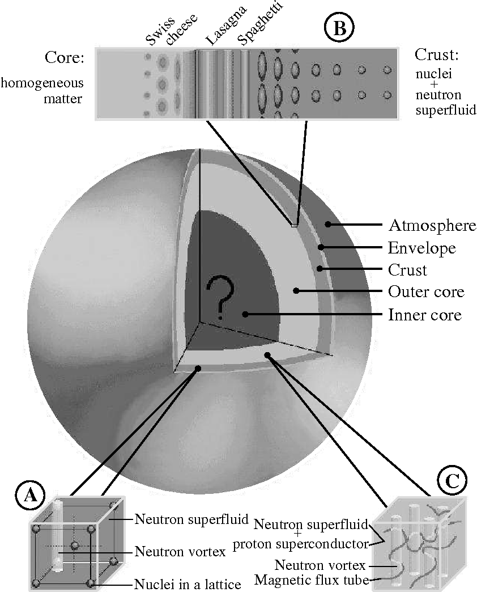
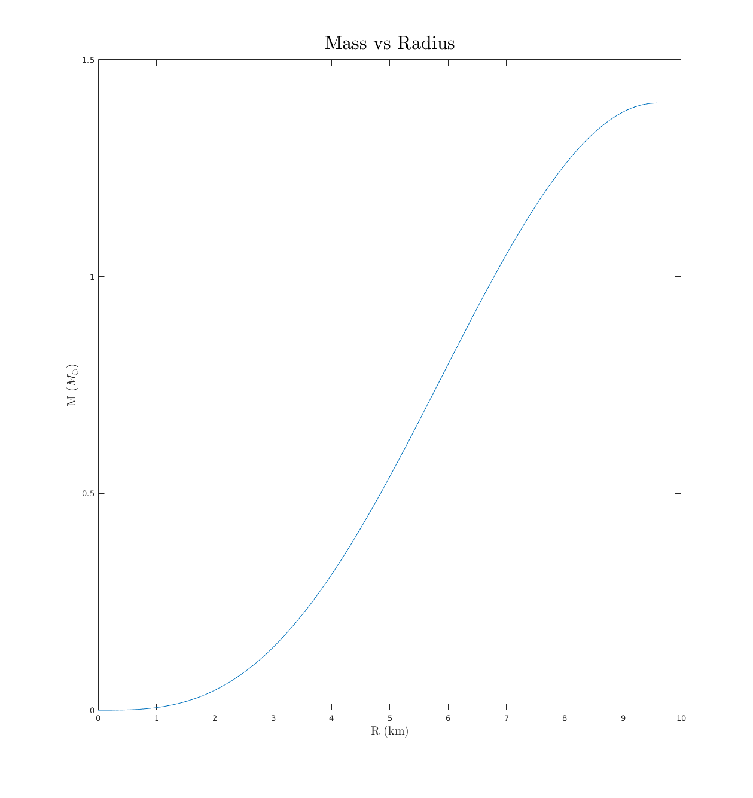
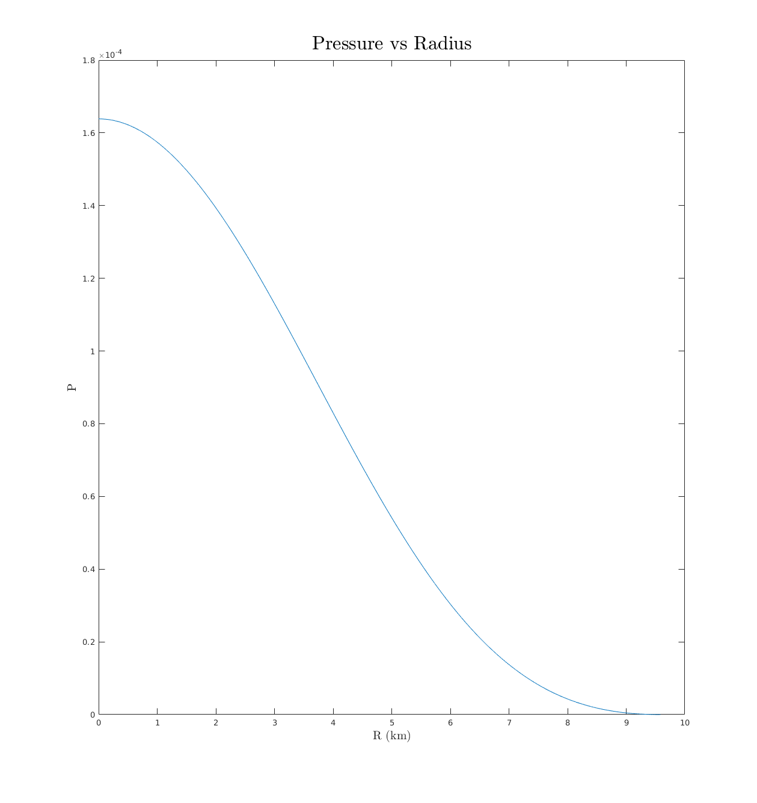
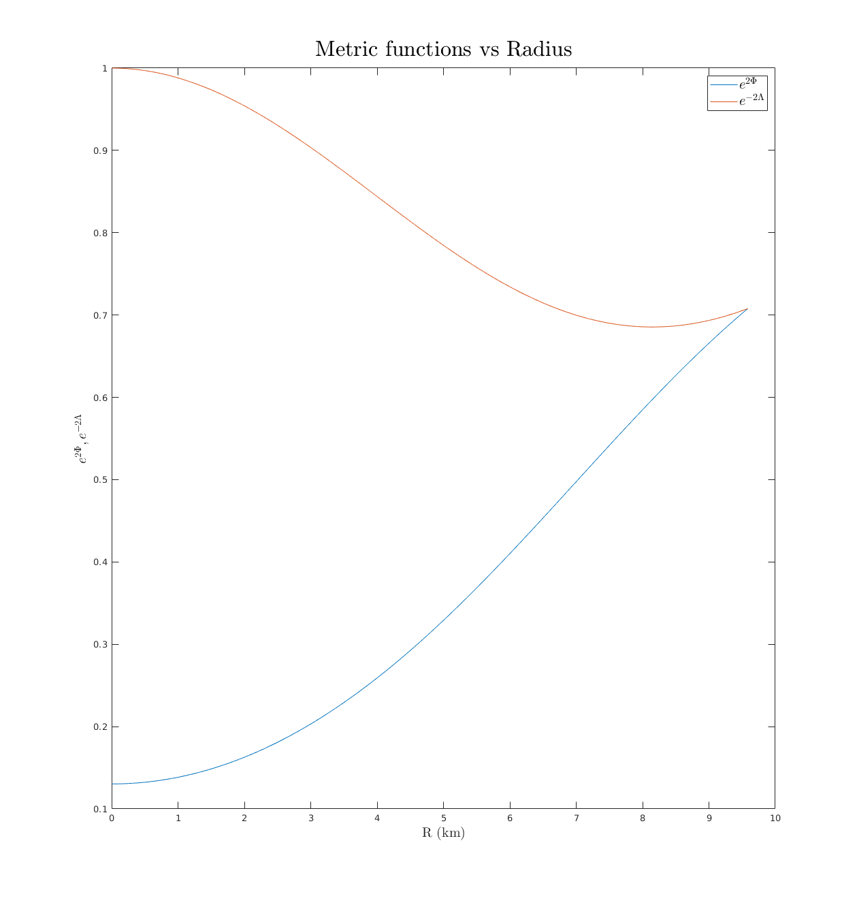

layout: true <div class="my-header"> <p class="align_left"><img src="images/yonsei_logo.png" style="height: 30px;"/></p> <p class="align_right"><b>Numerical implementation of Neutron star cooling</b></p> </div> <div class="my-footer"> <p class="align_right"><b>2018.01.10 Yonsei HEP-COSMO</b></p> <p class="align_left"><b>Tae Geun Kim</b></p> </div> --- class: center, middle # Numerical implementation of<br/>Neutron star cooling <h3 style="color: darkblue">Tae Geun Kim</h3> --- ## Table of Contents -- * **Brief introduction to Neutron star** -- * **Relativistic stellar structure** -- * **Implicit scheme to solve stiff ODE** -- * **TODO** --- class: center, middle # Brief introduction to<br/>Neutron star --- ### Brief introduction to Neutron star * Neutron Star are stellar remnants resulting from the gravitational collapse of a massive star during supernova event. -- * Discovered at 1967 -- * Known 2500+ -- * Mass: `\(\small 1.3 \,-\, 2M_\odot\)` -- * Radius: 8-14km -- * Density: `\(\small 10^{15}g/cm^3\)` -- * In our galaxy `\(\small \sim 100,000,000\)` --- class: split-50 ### Basic structure of Neutron star .left-column[ <div id="boxshadow" style="width:90%">  </div> ] <div class="right-column"> <ul> <li> <b>Atmosphere (10cm)</b><br> <font size=3pt>Consist of very thin fluid/gas. Where the spectrum of the thermal radiation of NS is formed. This radiation contains valuable information - effective surface temperature, surface gravity, chemical composition and etc. Thickness varies from <b>10cm</b> for <b>hot NS</b> to a <b>few mm</b> for <b>cold NS</b>. </font> </li><br> <li> <b>Envelope (100m)</b><br> <font size=3pt>Consist of a lattice of Fe. Contains a huge temperature gradient - extremly important for the cooling, strongly affected by magnetic fields. At bottom of envelope (\(\small \rho \sim 10^6g/cm^3\)) the electrons and protons start recombining in inverse \(\small \beta\)-decay</font> </li><br> </ul> </div> --- class: split-50 ### Basic structure of Neutron star .left-column[ <div id="boxshadow" style="width:90%"> </div> ] <div class="right-column"> <ul> <li> <b>Crust (1km)</b><br> <font size=3pt> At \(\small \rho \sim 3\times 10^{11}g/cm^3\) the nuclei gets unstable and the free neutrons are emitted - <b>neutron drip</b> </font> </li><br> <li> <b>Outer Core (10km)</b><br> <font size=3pt> The density range \(\small 0.5\rho_0 \leq \rho \leq 2\rho_0\). Contains most of the stellar mass, composed of neutrons with an admixture of protons & leptons (\(\small npe\mu\) matter) The neutrons and protons constitute a strongly interacting Fermi liquid and can become <b>superfluid</b>. </font> </li><br> <li> <b>Inner Core (? km)</b><br/> <font size=3pt> Occur for only massive neutron star, compositions & properties are not well known. There are some proposed theoretical models - quark-gluon plasma, kaon condensates, pion condensates, hyperon and etc. </font> </li><br> </ul> </div> --- ### Basic structure of Neutron star * Before handling neutron star cooling directly, we should solve two sets of equations.<br/><br/> -- * **Tolman-Oppenheimer-Volkoff equations**<br/> <font size=3pt>- Describe relativistic stellar structure</font><br/><br/> -- * **Thermal evolution equations**<br/> <font size=3pt>- Describe stellar evolution</font> --- class: center, middle # Relativistic stellar structure --- ### Tolman-Oppenheimer-Volkoff Equation * For static, non-rotating and spherical symmetric star, metric is given as $$ ds^2 = -e^{2\Phi(r)} dt^2 + e^{2\Lambda(r)} dr^2 + r^2 d\Omega^2 $$ -- * For isolated star, the metric must reduce to the Schwarzschild metric at outside of the star $$ ds^2 = - \left(1 - \frac{2M}{r}\right) dt^2 + \frac{1}{1 - \frac{2M}{r}}dr^2 + r^2 d\Omega^2 $$ -- * At interior of the star, let define new metric function for convenience $$ e^{-2\Lambda(r)} = 1 - \frac{2m(r)}{r} $$ The quantity `\(m(r)\)` can be interpreted as the **mass interior to radius `\(r\)`**. --- ### Tolman-Oppenheimer-Volkoff Equation * Now, consider perfect fluid matter $$ T\_{\mu\nu} = (\rho + P)u\_\mu u\_\nu + Pg\_{\mu\nu},~~~ u = e^{-\Phi}\frac{\partial}{\partial t}$$ -- * Rewrite: (index-free notation) $$ T = \rho^{2\Phi}dt^2 + \frac{P}{1 - \frac{2m(r)}{r}}dr^2 + Pr^2d\Omega^2 $$ -- * From Einstein equation, we can get two equations: <font size=2pt><a href="https://nbviewer.jupyter.org/github/Axect/NSCool/blob/master/Notes/TOV.ipynb">Specific calculation with SageManifolds</a></font> $$ \\begin{align} (0,0) &\Rightarrow \frac{dm(r)}{dr} = 4\pi r^2 \rho \\\ (1,1) &\Rightarrow \frac{d\Phi}{dr} = \frac{m(r) + 4\pi r^3 P}{r^2\left(1 - \frac{2m(r)}{r}\right)} \\end{align} $$ --- ### Tolman-Oppenheimer-Volkoff Equation * From energy conservation, we can get one more equation: $$ \nabla\_\mu {T^\mu}\_\nu = 0 ~ \Rightarrow ~ (\rho + P)\frac{d\Phi}{dr} + \frac{dP}{dr} = 0 $$ -- * These three fundamental equations are called **Tolman-Oppenheimer-Volkoff Equation** $$ \\begin{align} \frac{dm}{dr} &= 4\pi r^2 \rho \\\ \frac{d\Phi}{dr} &= \frac{m + 4\pi r^3 P}{r^2\left(1 - \frac{2m}{r}\right)} \\\ \frac{dP}{dr} &= - \frac{(\rho + P)(m + 4\pi r^3 P)}{r^2\left(1 - \frac{2m}{r}\right)} \\end{align} $$ --- ### Polytropic Equation of State * Neutron stars are well modeled by polytropes (solution of Lane-Emden equation) $$ P = K\rho\_0^\Gamma $$ where $$ \\begin{align} &K: ~ \text{polytropic gas constant} \\\ &\rho\_0 : ~ \text{rest mass density} \\\ &\rho\_0 = m\_u n\_B ~ \text{(for neutron star)}\\\ &m\_u: ~ \text{nucleon mass - atomic mass unit} \\\ &n\_B: ~ \text{baryonic number density} \\\ &\rho = \rho\_0 (1 + \epsilon) \\\ &\epsilon: ~ \text{internal energy density per unit mass} \\\ &\Gamma \equiv 1 + \frac{1}{n} \\\ &n : ~ \text{polytropic index} \\end{align} $$ --- ### Polytropic Equation of State * By 1st law of thermodynamics with isentropic condition, we can get $$ P = n\_B^2 \frac{\partial(\rho/n\_B)}{\partial n\_B} $$ -- * Substitute polytropic EoS: $$ \rho = \rho\_0 + \frac{P}{\Gamma - 1} = \left(\frac{P}{K}\right)^{\frac{1}{\Gamma}} + \frac{\rho}{\Gamma - 1} $$ --- ### Solving TOV equation * Total running terms <div class="split-50"> <div class="left-column"> $$ \begin{align} \frac{dm}{dr} &= 4\pi r^2 \rho \\ \frac{dP}{dr} &= - \frac{(\rho + P)(m + 4\pi r^3 P)}{r^2\left(1 - \frac{2m}{r}\right)} \\ \frac{d\Phi}{dr} &= \frac{m + 4\pi r^3 P}{r^2\left(1 - \frac{2m}{r}\right)} \\ \frac{dN_B}{dr} &= \frac{4\pi r^2 n_B}{\sqrt{1 - \frac{2m}{r}}} \end{align} $$ </div> <div class="right-column"> $$ \begin{align} \rho_0 &= \left(\frac{P}{K} \right)^{\frac{1}{\Gamma}} \\ \rho &= \rho_0 + \frac{P}{\Gamma - 1} = \left(\frac{P}{K} \right)^{\frac{1}{\Gamma}} + \frac{P}{\Gamma - 1} \\ n_B &= \frac{\rho_0}{m_u} = \frac{1}{m_u}\left(\frac{P}{K} \right)^{\frac{1}{\Gamma}} \end{align} $$ </div> </div> --- ### Solving TOV equation * Total boundary conditions <div class="split-50"> <div class="left-column"> $$ \begin{align} &m(0) = 0 \\ &\rho_0(0) = \rho_c \\ &P(0) = P_c = K\rho_c^\Gamma \\ &n_B(0) = n_c = \frac{\rho_c}{m_u} \end{align} $$ </div> <div class="right-column"> $$ \begin{align} &P(R) = 0 \\ &\Phi(R) = \frac{1}{2}\ln{\left(1 - \frac{2M}{R}\right)} \end{align} $$ </div> </div> --- ### Results (`\(\small K=100, \Gamma = 2, \rho_c = 1.28\times 10^{-3}\)`) <div class="split-40"> <div class="left-column"> $$ \begin{align} R &= 9.5850 km \\ M &= 1.4002 M_\odot \end{align} $$ </div> .right-column[ <div id="boxshadow" style="width:100%">  </div> ] </div> --- ### Results (`\(\small K=100, \Gamma = 2, \rho_c = 1.28\times 10^{-3}\)`) <div class="split-40"> <div class="left-column"> $$ P(0) = P_c, ~~ P(R) = 0 $$ </div> .right-column[ <div id="boxshadow" style="width:100%">  </div> ] </div> --- ### Results (`\(\small K=100, \Gamma = 2, \rho_c = 1.28\times 10^{-3}\)`) <div class="split-40"> <div class="left-column"> $$ e^{2\Phi(R)} = e^{-2\Lambda(R)} $$ </div> .right-column[ <div id="boxshadow" style="width:100%">  </div> ] </div> --- class: center, middle # Implicit scheme to<br/>solve stiff ODE --- ### Brief view - Thermal evolution equations * Energy balance $$ \frac{d(Le^{2\Phi})}{dr} = - \frac{4\pi r^2 e^\Phi}{\sqrt{1 - 2m/r}}\left(C\_v \frac{dT}{dt} + e^\Phi(Q\_\nu - Q\_h)\right) $$ -- * Energy transport $$ \frac{d(Te^\Phi)}{dr} = -\frac{1}{\lambda} \frac{Le^\Phi}{4\pi r^2 \sqrt{1 - 2m / r}} $$ -- where * `\(C_v\)`: Specific heat * `\(L\)`: Diffusive luminosity at `\(r\)` * `\(\lambda\)`: Thermal conductivity * `\(Q_\nu\)`: Neutrino emissivity * `\(Q_h\)`: Heating late --- ### Brief view - Thermal evolution equations * Let's rewrite these equations with red-shifted functions & Lagrangian coordinate `\(a\)` $$\mathcal{T} = e^\Phi T, ~ \mathcal{L}=e^{2\Phi}L,~~~ da = \frac{4\pi r^2 n\_B dr}{\sqrt{1 - 2m/r^2}}$$ -- * Then we can get next two implicit equations -- <div class="split-50"> <div class="left-column"> $$ \frac{d\mathcal{T}}{dt} = F\left(\mathcal{T}, \frac{d\mathcal{L}}{da}\right) $$ </div> <div class="right-column"> $$ \mathcal{L} = G\left(\mathcal{T}, \frac{d\mathcal{T}}{da}\right) $$ </div> </div><br/> -- <br/><br/> * But there is serious problem - **Numerically unstable**(stiff) unless step size is very small -- * We can't use explicit scheme - Euler, RK4, Verlet and etc. -- * We should use implicit scheme - Backward Euler, DIRK, Rosenbrock-Krylov and etc. -- * Our choice is **Backward Euler** - Most robust method (but high cost) --- ### Brief view - Backward Euler * Suppose that there is non-autonomous ODE system $$\mathbf{Y'} = f(t, \mathbf{Y})$$ -- * One step of Backward Euler is as follow: $$\mathbf{Y}\_{n+1} = \mathbf{Y}\_n + h f(t\_n + h, \mathbf{Y}\_{n+1})$$ -- * To find `\(\mathbf{Y}_{n+1}\)`, we should find root of above equation. There are some solutions. -- * Use CAS (like Mathematica) - If there are no algebraic roots, require very high costs. -- * Numerical method - Errors can do snowballing. (e.g. Approximate Jacobian) -- * Modern regime - **Automatic Differentiation** -- * Can find **exact** Jacobian very **fast**. - No error snowballing! -- * Actively used in field of Machine Learning -- * I have achieved to reduce high cost of Backward Euler with AD & Rust (High performance programming language) --- class: center, middle # TODO --- ### Current Progress **Symbolic** * Solve TOV from spherical symmetric metric & polytropic EM Tensor -- **Numeric** * Implement Explicit RK4 * Apply ERK4 to TOV eq * Implement Implicit Method * Backward Euler Method --- ### TODO **Numeric** * Implement more implicit methods * 4th order Gauss-Legendre (GL4) * Diagnoal Implicit Runge-Kutta (DIRK) * Ronsenbrok-Krylov * Provide precise and various benchmark -- **Physics** * To formulate neutrino emissivity for several Equation of States & Core model * Focus on Cas A (Cassiopeia A) * Modified Urca * Bremsstrahlung * Cooper pair breaking and formation (PBF) -- **Interface** * Implement one-click (or type) installation for any OS * Various language API (Python or even Mathematica?) --- ### References * Baumgarte, Thomas W., and Stuart L. Shapiro. *Numerical relativity : solving Einstein's equations on the computer.* Cambridge New York: Cambridge University Press, 2010. Print. * Camenzind, M. *Compact objects in astrophysics : white dwarfs, neutron stars and black holes.* Berlin New York: Springer, 2007. Print. * D. Page, *Thermal Evolution of Isolated Neutron Stars* in The Many Faces of Neutron Stars, Eds A. Alpar, R. Buccheri, & J. van Paradijs (Kluwer Academic Publishers), p. 539 - 552 (1998) * arXiv:1507.06186 [astro-ph.HE] * arXiv:1308.6121 [astro-ph.HE]